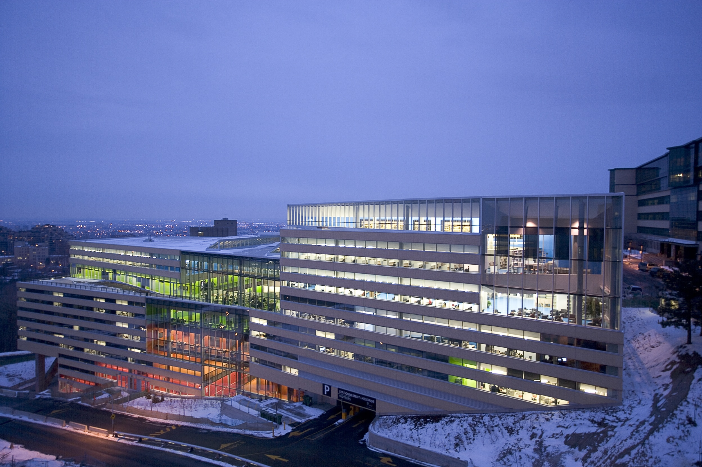
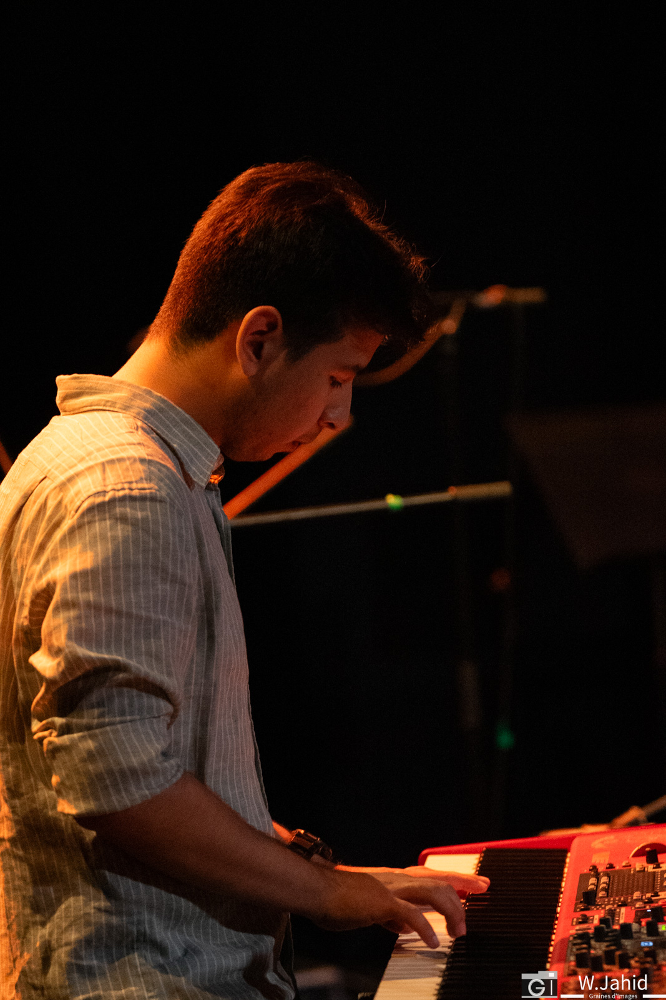

<div class="row align-items-center default-container">
    <div class="col-lg-8">
        <div class="content">
            <div class="content-left">
                <h2 class="default-topic">About me.</h2>
                <p class="default-p">
                    Hi there! My name is <span class="default-highlight2">Diego</span> and I am a <span class="default-highlight2">Computer Engineering</span> student based in the metropolitan region of 
                    <span class="default-highlight2">Montreal</span>, Quebec. I am currently enrolled at <span class="default-highlight2">Polytechnique Montreal</span> and I am in my 3rd year of studies.
                </p>

                <p>
                    
                </p>

                <p class="default-p">
                    I first started programming back in 2021, when I was in my last semester of college. I had to
                    take a course on programming a physics simulation and I was hooked. Fast-forward to today, and I have
                    had the chance to work with <span class="default-highlight2">several technologies</span> and do some cool projects.
                </p>

                <p class="default-p">
                    Projects that I did so far include mainly <span class="default-highlight2">web development</span> and <span class="default-highlight2">embedded systems</span>. I am also presently
                    a member of <span class="default-highlight2">Exocet</span>, a student-lead project that aims to build a <span class="default-highlight2">hydrogen-powered catamaran</span> to compete 
                    in the <span class="default-highlight2">Monaco Engergy Boat Challenge</span>.
                </p>

                <p class="default-p">
                    I really value <span class="default-highlight2">self-improvement</span> and I am always looking for ways to learn <span class="default-highlight2">new skills</span>. I am constantly
                    trying out new things and I am always looking for ways to be a better programmer.
                </p>

                <p class="default-p">
                    My love for <span class="default-highlight2">traveling</span> also led me to make an <span class="default-highlight2">student exchange</span> program in France at <span class="default-highlight2">INSA Lyon</span>. It was
                    an amazing experience and I learned a lot about the european education system and culture.
                </p>
                <p class="default-p">
                    On my free time, I enjoy <span class="default-highlight2">reading</span>, playing <span class="default-highlight2">sports</span> and playing <span class="default-highlight2">musical instruments</span>.
                </p>
                <p class="default-p">
                    Checkout my projects and feel free to reach out to me for any inquiry!
                </p>
                <p>
                    
                </p>
            </div>
        </div>
    </div>
</div>
